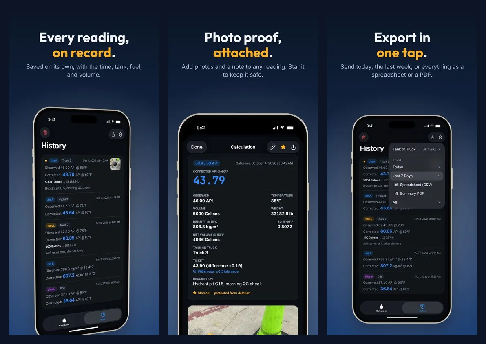

Fuel Quality Records for Line Service: What to Log and How to Keep It
Fuel quality records get read by people who weren't there: your fuel supplier's auditor, the airport, an airline you fuel for, or a supervisor sorting out a question weeks later. A good record lets any of them see what was checked, when, by whom, and what it showed, without having to ask.
Your quality control manual decides which forms you fill in and how long you keep them. These are the habits that make any of those forms more useful.
Record What You Read, Not Just the Answer
For a gravity check, write down the observed hydrometer reading and the temperature, then the corrected value. A corrected number on its own can't be checked. With the raw reading next to it, anyone can rerun the correction and get the same answer.
Tie Every Reading to a Place
Note which tank, truck, or hydrant pit the sample came from. When a question comes up about one truck, you want that truck's readings without reading through everything else.
Keep the Evidence
A photo of the delivery ticket, the hydrometer in the cylinder, or the sample jar settles most questions faster than anyone's memory. Paper forms that sat out on a wet ramp are another reason to have a backup.
Don't Rewrite History
If a record needs a correction, the original should still be visible, with the change and the reason next to it. A record that can be quietly edited is hard to trust in an audit.
Make It Easy to Hand Over
At the end of a shift or a month, records need to get from wherever they were taken into your official system or an auditor's hands. Something that exports cleanly gets filed. Something that has to be retyped often doesn't.
How AvGrav Keeps Gravity Readings
AvGrav was built around those habits:
- Saved as you go. Every corrected reading is saved with the date and time. There's no Save button to forget.
- Raw values stay put. The observed reading, temperature, fuel, and corrected value can't be changed after saving. Notes, volume, and photos can be edited, and every edit is recorded with the reading.
- Tanks and trucks. Name your tanks, trucks, and pits once, tap one for each reading, and filter History by it.
- Photos and notes. Attach photos of the ticket, the hydrometer, or the sample, plus a note. Star a reading to protect it from deletion.
- Required fields. Settings can require a photo or a volume before a reading saves, so a crew's records come back complete.
- Exports. History exports today, the last week, or everything as a spreadsheet (CSV) or a summary PDF, and any single reading can be shared as a PDF report.

AvGrav keeps readings on the phone, with no account and no server, so export regularly into whatever system your program uses. And it's a calculator and a log, not a replacement for required forms: if your manual specifies a form, keep filling it in, and file AvGrav's PDF alongside it.
AvGrav and this guide are reference and convenience tools, not certified measurement instruments or a substitute for a calibrated hydrometer, thermometer, or your organization's official procedures. Always follow your organization's quality control program and applicable regulations before accepting, rejecting, or releasing any fuel.